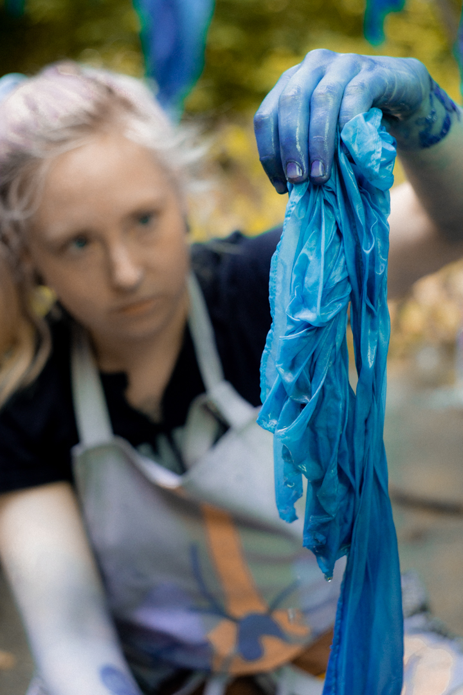

What Are Natural Dyes?
Early natural dyers - dating back to, at least, the advent of agriculture over 12,000 years ago - likely
discovered their colors through cooking. Madder, weld, indigo, and walnut were recorded as known
dyestuffs by
the end of the first century BCE.
Synthetic dyes became readily available as a cheaper, faster alternative to traditional dye techniques in
the
late 1800s. Natural dye processes faded into relative obscurity. As artists shift their interests toward
a
return to slower, more thoughtful processes, natural dye is seeing a resurgence in popularity.

A Note About Indigo
Indigo has become one of my favorite dye materials over the last few years. It has an incredible history, dating back more than 5,000 years and is found in the history of cultures all across the world. Indigo pigment (indican) is derived from the Indigo plant (Indigofera Tinctoria) and requires special processes to be extracted, fermented, and used for dyes. Rather than steeping the indigo in simmering water, it must be mixed in a fermentation vat fed with sugars (think of it like a sourdough starter). A properly maintained vat can be used continuously for months, if not years. The dye vat itself is clear liquid ranging in color from lime green to yellow-brown. Slowly stir to re-activate, let it sit, then slower in your fabric. When you raise your fabric back out, it will be a brilliant, bright green. Over time, the green will oxidize and turn into the bright blue you expect. To darken your shade of blue, continue to dip your fabric and let it oxidize. Each dip will deepen the color. Indigo is a color and dye process unlike any other. I love teaching it to friends because the process is truly magical.
